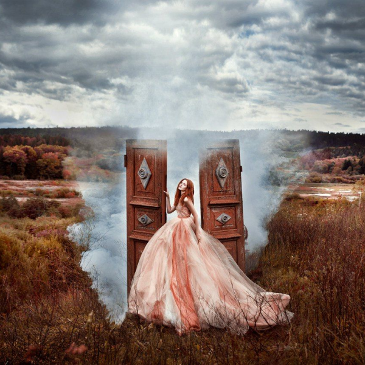
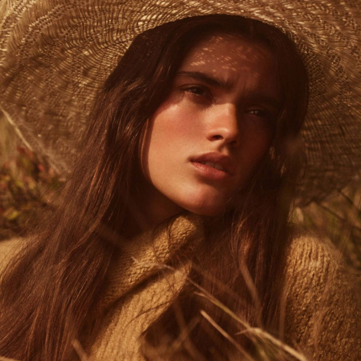
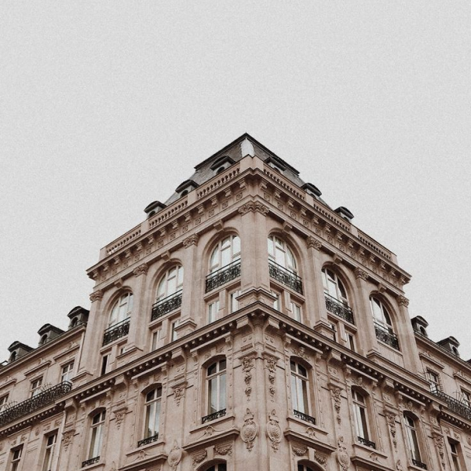

Портреты
Портрет – наиболее популярный, но и очень сложный жанр в фотографии. Портретная съемка – не просто позирование и нажимание кнопки спуска, портрет требует осмысленного подхода, подготовки и усердия.
person
Константин Степанов
history_toggle_off
2-3 часа
currency_ruble
2000-5000

Студийная съемка
Проведение профессиональной съемки в студии является залогом получения высококачественных работ. Полученные фото позволят реализовать бизнес-идеи или могут быть заказаны для личного использования.
person
Константин Степанов
history_toggle_off
Около дня
currency_ruble
От 5000

Видеосъемка
Видеограф — это специалист, который занимается полным циклом видеопроизводства — от съемки до презентации смонтированного видео заказчику. Он проводит видеосъемку частных и корпоративных мероприятий, создает видеоролики для блогов.
person
Сергей Степанов
history_toggle_off
От типа работы
currency_ruble
от 4000

Свадебный фотограф
Люди всегда стремятся оставить себе память о важных для них событиях. А фотографии свадебных церемоний, скорее всего, были одними из первых, которые всем хотелось сохранить на память с тех времен, когда появились фотоаппараты, так как мало событий в жизни человека, которые по важности могут соперничать с бракосочетанием.
person
Константин Степанов
history_toggle_off
Один день
currency_ruble
от 40000

Арт-фотограф
Проведение профессиональной съемки в студии является залогом получения высококачественных работ. Полученные фото позволят реализовать бизнес-идеи или могут быть заказаны для личного использования
person
Сергей Степанов
history_toggle_off
От типа работы
currency_ruble
От 5000

Репортажная фотосъемка
Репортажная фотосъёмка – это особый вид фотографии, объединяющий в себе пейзажную, портретную, бытовую и другие жанры фотосъёмки. Главная задача репортажной съёмки заключается в том, чтобы передать атмосферу события
person
Анастасия Степанова
history_toggle_off
2-10 часов
currency_ruble
5000 в час

Fashion фотограф
Fashion-фотография - это жанр фотоискусства, демонстрирующий одежду, аксессуары, прически и другие аспекты модной индустрии. Главные площадки для размещения Fashion-фотографий.
person
Анастасия Степанова
history_toggle_off
4-5 часов
currency_ruble
5000-10000

Архитектурный фотограф
Архитектура — это вехи, которые история расставляет на пути своего развития. Здания и сооружения, давно ставшие фоном нашей повседневной жизни, являются самыми доступными сюжетами фотосъемки.
person
Анастасия Степанова
history_toggle_off
от 1 дня
currency_ruble
от 20000
chevron_right
chevron_left